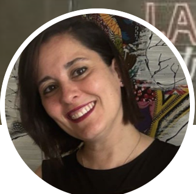

Capability Building & Transformation en Roche · Organisation & HR Specialist · Enterprise Agile Coach
España
Experience partnering with startups and corporates to cascade and implement their purpose to any point/person in the company, accelerating processes, facilitating customer engagement and unlocking resource allocation to focus on priorities. Direct report to C-level.
Digital transformation. Portfolio management. Talent fluidity. Strategic agility. Innovation. Leadership and transformation. Purpose and vision driven. Foresight. Organizational design and HR agile. Enterprise Agile coach. SAFe programme and portfolio consultant. Agile frameworks (SAFe, Lean, Kanban y Scrum). Entrepreneurship. Diversity. Multi-country.
Texto tal y como aparece en su perfil de LinkedIn (en inglés).
Transformation and Business Capabilities
Roche
Oct. 2019 — Actualidad · 6 años 11 meses
Liderazgo de la adopción ética de IA en el día a día, gestión de conflictos multi-país, diseño de nuevas arquitecturas financieras, priorización de portfolio y estrategia de gestión del conocimiento. Soporte a las áreas de People&Culture y Comunicación en sus procesos de transformación, e implementación de nuevas rutinas de trabajo ágil a escala.
Director Postgrado en "Agile Project & Product Management"
IEBSchool — Universidad Rey Juan Carlos · Online
May. 2012 — Actualidad · 14 años 4 meses
Responsable de la selección de profesorado y la dirección técnica del programa: revisión y actualización de contenidos, acompañamiento al alumnado y coordinación del comité de profesores.
Enterprise Agile Coach and Business Agility Consultant
Kairós Digital Solutions S.L.
Nov. 2015 — Oct. 2019 · 4 años
Definición e implementación de estructuras lean y de gobierno en empresas de finanzas, telco y retail; transformación de RRHH (talento, reskilling, nuevos roles), gestión del cambio cultural y evaluaciones de madurez ágil. Creación de la delegación de Kairós DS en Londres (VP Kairos UK) y soporte a la transformación ágil de Santander UK.
Presidenta
AECUMAD — Asociación de Emprendedores/as Culturales y Creativos de Madrid
Dic. 2010 — Ago. 2016 · 5 años 9 meses
Impulso del emprendimiento en las industrias culturales y creativas, generando sinergias y visibilizando el potencial económico de la creatividad.
Digital Strategy
InvestBAN · Madrid
Oct. 2012 — Nov. 2013 · 1 año 2 meses
Estrategia digital para la red de inversores y Business Angels InvestBAN, punto de encuentro entre proyectos innovadores e inversores.
Strategic Alignment Programme — Strategy
University of Oxford
Oct. 2020 — Dic. 2020
Designing a New Learning Environment
Stanford University
2012 — 2013
+2 programas formativos adicionales — ver todos en LinkedIn.
+3 certificaciones adicionales en Agile y Business Agility — ver el listado completo en LinkedIn.
"Sandra es una visionaria futurista que siempre va delante de los demás. Su creatividad desbordante y su implicación con el proyecto académico Agile en IEBS han dejado un legado de más de 1.000 profesionales formados en el mercado, ocupando puestos de gran responsabilidad."
— Oscar Fuente Castrillejo, Tech Entrepreneur
"Sandra es una persona muy versátil, con una gran pasión por su trabajo y por ayudar a otros a conseguir sus objetivos. Es una profesional íntegra, que siempre busca el beneficio de todos los involucrados, haciendo negocios con una visión sostenible."
— Miguel Abreu, Fractional Tech CEO